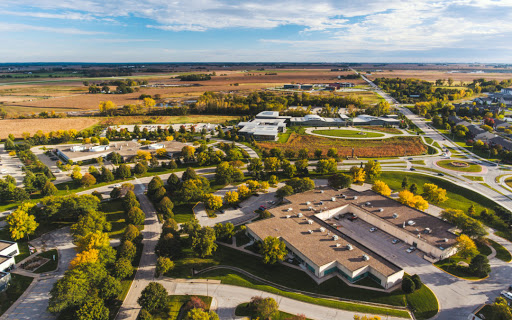

The Maps and images shown below highlights some locations on Iowa State University campus. I am so facinated about the beauty of ISU campus and the facilities and services that it has.
Map of Iowa state University Campus
Research Parks

Location of Iowa state university
View Larger Map